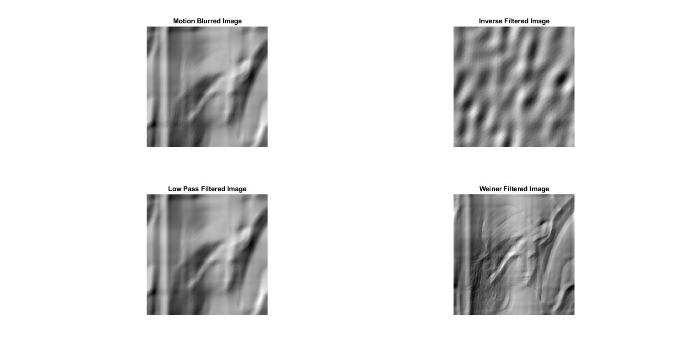

Contents
- IVP Assignment 5
- Creating a new environment.
- Functions Created: motion_blur
- Functions Created: inv_motion_blur
- Functions Created: low_pass_gaussian_filter
- Functions Created: weiner_filter
- Image Imports
- Image Resoration
- Image Restoration after Synethetically Degrading the Image via a Motion Blur Model
- Image Restoration after taking a real Motion Blurred Image
- Conclusion
IVP Assignment 5
% Name: Chanakya Ajit Ekbote % Institute: Indian Institute of Technology Bhubaneswar % Date: 09.11.2020 % Degree: B.Tech % Branch: Electronics and Communication % Roll Number: 17EC01041
Creating a new environment.
clc; clear all; close all;
Functions Created: motion_blur
% Function that creates a blurred image similar to that of a camera shake % or moving objects. function [img] = motion_blur(image, a, b, T) % Input image. % a: Rate of motion in x. % b: Rate of motion in y. % T: Duration of Exposure. [row, col] = size(image); u = (0:1:(col-1)) + 1e-16; v = (0:1:(row-1)) + 1e-16; % Creates repetative rows and columns to get the entire matrix. u = repelem(u, row, 1); v = repelem(v', 1, col); angle = u*a + v*b; H = (sin (angle) .* exp(-1i * pi * angle) ./ angle) * T / pi; img = mat2gray(real(ifft2(fft2(image).*H)));
Functions Created: inv_motion_blur
% Function that tries to get back the original image using the knowledge % that we have an idea of the degradation function. function [img] = inv_motion_blur(image, a, b, T) % Input image. % a: Rate of motion in x. % b: Rate of motion in y. % T: Duration of Exposure. [row, col] = size(image); % Here the shifting the u = (0:1:(col-1)) + 1e-16; v = (0:1:(row-1)) + 1e-16; % Creates repetative rows and columns to get the entire matrix. u = repelem(u, row, 1); v = repelem(v', 1, col); angle = u*a + v*b; H = (sin (angle) .* exp(-1i * pi * angle) ./ angle) * T / pi; img = mat2gray(real(ifft2(fft2(image) ./ H)));
Functions Created: low_pass_gaussian_filter
% Function that uses a low pass radial filter to remove the blurr in the % original image. function [img] = low_pass_gaussian_filter(image, var) % image: We assume that it is a grayscale image. % var: Gives the variance of the 2D gaussian distribution. dft_image = fftshift(fft2(image)); [row, col] = size(dft_image); mid_row = (1 + row) / 2; mid_col = (1 + col) / 2; filter = zeros(size(dft_image)); % Creates the low pass gaussian filter for smoothening. for i = 1:row for j = 1:col filter(i, j) = exp(-((mid_row - i)^2 + (mid_col-j)^2) / (2 * var^2)); end end % ifftshift shifts the fft2d back and then perform the idft. img = mat2gray(real(ifft2(ifftshift(filter .* dft_image))));
Functions Created: weiner_filter
% Function that implements filters an motion blurred image, using a weiner % filter. function [img] = weiner_filter(image, a, b, T, K) % image: Input image. % a: Rate of motion in x. % b: Rate of motion in y. % T: Duration of Exposure. % K: Constant used in the Weiner Filter. [row, col] = size(image); u = (0:1:(col-1)) + 1e-16; v = (0:1:(row-1)) + 1e-16; % Creates repetative rows and columns to get the entire matrix. u = repelem(u, row, 1); v = repelem(v', 1, col); angle = u*a + v*b; H = (sin (angle) .* exp(-1i * pi * angle) ./ angle) * T / pi; weiner_filt = abs(H).^2 ./ ((abs(H).^2 + K).*H); img = mat2gray(real(ifft2(fft2(image) .* weiner_filt)));
Image Imports
lena = imread('C:\Chanakya\Projects\ivp-assignments\Assignment-5\images\lena_gray_256.tif'); bruce_springsteen = rgb2gray(imread('C:\Chanakya\Projects\ivp-assignments\Assignment-5\images\bruce_springsteen.jpg'));
Image Resoration
There are three principal ways for estimating the degradation function: 1. observation, 2. experimentation, and 3. mathematical modeling.
In this experiement we try to restore a motion blurred image via mathematically modelling the motion blur.
The mathematical model of the motion blur can be observed as follows:
Note that we assume that the image has undergone a movement and in the and direction respectively. Moroever we also assume that the motion was captured within which is the duration of exposure of the sensor of the camera.
In the frequency domain, it can be expressed as:
Where: and
Note that is the FFT of the original image, is the degradation function and $ G(u,v) $ is the FFT of the degraded function and and are the rates of motion in the respective directions.
Once we know the model, we can theortically get back the image by using an inverse process, that is:
Since its a motion blur, we can try using a low pass radial filter to reduce the high frequency components and get back the image.
Another method of restoring the image is by using the Weiner Method where we try to reduce the expected l2 norm between the original image and the estimated original image. The final formula obtained in the frequency domain is:
Image Restoration after Synethetically Degrading the Image via a Motion Blur Model
% Calling the motion_blur function (Degrading the image) motion_blured_lena = motion_blur(lena, 0.1, 0.1, 2); % Calling the inv_motion_blur function inverse_filtered_lena = inv_motion_blur(motion_blured_lena, 0.1, 0.1, 2); % Calling the low_pass_gaussian_filter function radially_filtered_lena = low_pass_gaussian_filter(motion_blured_lena, 50); % Calling the weiner_filter function weiner_filtered_lena = weiner_filter(motion_blured_lena, 0.1, 0.1, 2, 0.005); % Plotting the images figure('Name', 'Synthetic Image Restoration', 'units', ... 'normalized','outerposition', [0 0 1 1]); subplot(2, 2, 1) imshow(motion_blured_lena); title('Motion Blurred Image'); subplot(2, 2, 2) imshow(inverse_filtered_lena); title('Inverse Filtered Image'); subplot(2, 2, 3) imshow(radially_filtered_lena); title('Low Pass Filtered Image'); subplot(2, 2, 4) imshow(weiner_filtered_lena); title('Weiner Filtered Image');
Image Restoration after taking a real Motion Blurred Image
% Calling the inv_motion_blur function inverse_filtered_bruce = inv_motion_blur(bruce_springsteen, 0.1, 0.1, 2); % Calling the low_pass_gaussian_filter function radially_filtered_bruce = low_pass_gaussian_filter(bruce_springsteen, 50); % Calling the weiner_filter function weiner_filtered_bruce = weiner_filter(bruce_springsteen, 0.1, 0.1, 2, 0.005); % Plotting the images figure('Name', 'Synthetic Image Restoration', 'units', ... 'normalized','outerposition', [0 0 1 1]); subplot(2, 2, 1) imshow(bruce_springsteen); title('Motion Blurred Image'); subplot(2, 2, 2) imshow(inverse_filtered_bruce); title('Inverse Filtered Image'); subplot(2, 2, 3) imshow(radially_filtered_bruce); title('Low Pass Filtered Image'); subplot(2, 2, 4) imshow(weiner_filtered_bruce); title('Weiner Filtered Image');
Conclusion
From this experiment we can see that if we can mathematically estimate the degradation function we can get back the original image. However, one major caveat is that the model that has been developed has to be good enough. Else the inverse filtering process does not work very well. In addition to that we also observe that even if the degradation function has been modelled well, there is no guarentee that the inverse filteration process works well. For an inverse filteration process to work well, the relationship between the degraded function and its inverse has to be bijective which is not usually the case. We also observe that using a low pass filter does not work very well. The Weiner Filter works well but a major problem is estimating the rates of motion a, b the exposure time T as well as the Wiener Constant k. If the constants are not chosen properly, then the image is not restored well.